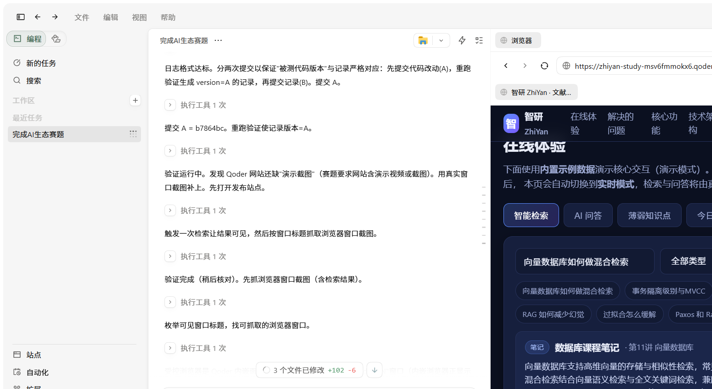
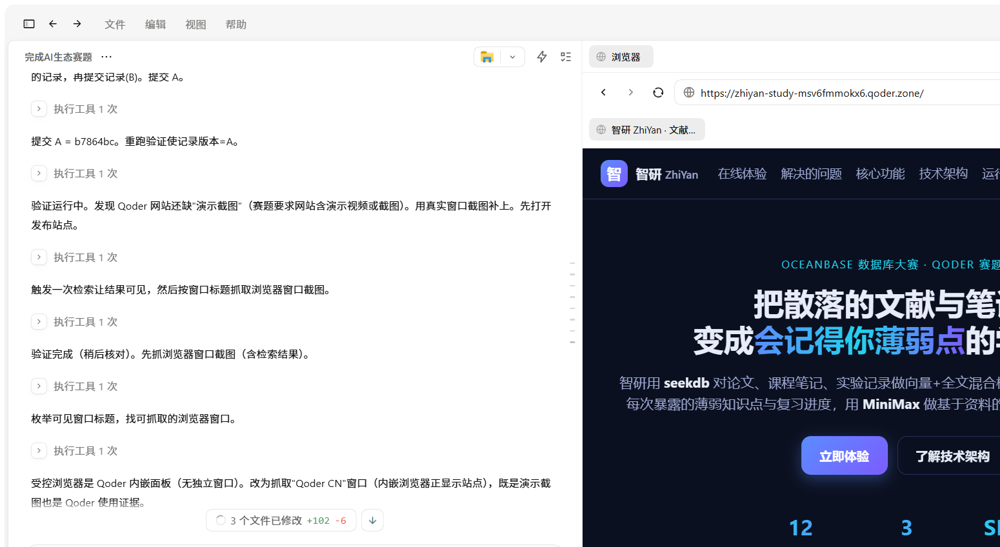

OceanBase 数据库大赛 · Qoder 赛题作品
把散落的文献与笔记，
变成会记得你薄弱点的学习助手
智研用 seekdb 对论文、课程笔记、实验记录做向量+全文混合检索，用 PowerContext 记住你每次暴露的薄弱知识点与复习进度，用 MiniMax 做基于资料的问答与嵌入——越用越懂你。
在线体验
下面使用内置示例数据演示核心交互（演示模式）。按「运行说明」在本地启动后端后， 本页会自动切换到实时模式，检索与问答将由真实的 seekdb 与 MiniMax 提供。
实时模式下每条结果会标出它在向量腿与全文腿各自的名次与融合分数——这就是"两种检索确实都在起作用"的可核对证据。
标记后由 PowerContext 持久化保存；复习评分会按间隔重复安排下次复习。
今天到期或逾期、最该复习的薄弱知识点（间隔重复计划）。
演示截图
真实运行截图：站点在 Qoder 内嵌浏览器中的演示模式（检索交互与首屏）。


解决的问题
资料散落，检索靠翻
论文、课程笔记、实验记录分散在不同文件，复习时找不到上学期的内容，关键词搜索又匹配不到语义相关段落。
薄弱点记不住，复习无计划
每次都错在同样的知识点，却没有系统记录与提醒，复习全凭感觉，遗忘曲线被反复重置。
AI 问答容易幻觉
直接问大模型缺少你的私有资料上下文，答案泛泛甚至编造，无法定位到具体出处。
核心功能
① 混合检索（可核对两腿贡献）
seekdb 单引擎内：HNSW 向量腿走 approx 近邻扫描，中文全文腿走 ik 分词的
match against，再做融合；支持按文献/笔记/实验类型过滤。融合方式与权重由带标注的查询集扫出来，
结果里能看到每条命中分别来自哪条腿。
② 基于资料的问答
MiniMax-M1 严格依据检索到的资料作答并标注 [编号] 出处，无资料时明确说明，不编造。
③ 薄弱点记忆
PowerContext 持久化保存每个薄弱知识点；跨会话、重启后仍可读取，越用越懂你。
④ 间隔重复复习
SM-2 lite 调度：根据复习评分动态调整下次复习时间，自动生成「今日复习」计划。
检索质量实测
混合检索不是"加了就一定更好"。下面是在 seekdb v1.3.0.0 上，用
48 篇语料 + 12 条人工标注查询（每条列出全部应命中文档）实测的 recall@5，
可用 python scripts/verify.py 复现。
语义 embedding（MiniMax embo-01，1536 维）
| 召回方式 | recall@5 |
|---|---|
| 仅向量 | 0.4305 |
| 仅全文（ik 分词） | 0.8194 |
| 混合（本项目默认：加权融合 w=0.25） | 0.8472 |
| 混合（教科书 RRF w=0.5） | 0.7639 |
混合比最好单腿 +0.0278；而权重给错（RRF 0.5）会低于纯全文。这就是必须先评测再定融合配置的原因。
离线词法向量（零依赖，无需 API Key）
| 召回方式 | recall@5 |
|---|---|
| 仅向量 | 0.6250 |
| 仅全文（ik 分词） | 0.8194 |
| 混合（默认配置） | 0.7986 |
诚实结论：用字符 n-gram 哈希当 embedding 时向量腿没有语义泛化能力，混合没有增益（-0.0208）。混合检索的收益来自语义向量，不来自"多接一路"。
另有 explain 取证：向量腿计划为 VECTOR INDEX SCAN、全文腿为 TEXT RETRIEVAL SCAN（两路都真的走了索引，不是全表算）；PowerContext 侧记录了"写入 → 另一进程读回 → 复习重排"的跨进程复用证据。详见代码仓库 qoder/zhiyan/records/。
技术架构与分工
┌──────────────┐ HTTP ┌───────────────────────────┐
│ 前端 Web UI │ ────────────▶ │ FastAPI 后端 (本地运行) │
│ (Qoder Sites) │ ◀──────────── │ │
└──────────────┘ └──────────┬────────────────┘
│
┌───────────────────────────────┼───────────────────────────────┐
▼ ▼ ▼
┌───────────────┐ ┌──────────────────┐ ┌──────────────────┐
│ seekdb │ │ PowerContext │ │ MiniMax │
│ 混合检索存储 │ │ 薄弱点/复习记忆 │ │ 嵌入 + 资料问答 │
└───────────────┘ └──────────────────┘ └──────────────────┘
| 技术 | 承担的作用 | 接入方式 |
|---|---|---|
| seekdb | 存储文献/笔记/实验语料；HNSW 向量腿 + ik 中文全文腿 + 融合排序，支持类型过滤 | MySQL 协议（PyMySQL 原生 SQL，单条 DDL 建两种索引） |
| PowerContext | 保存薄弱知识点与复习进度（Memory），记录复习事件（Source），重启后复用 | HTTP API + Python Client |
| MiniMax | 可选增强：embo-01 生成 1536 维语义嵌入；MiniMax-M1 基于检索资料做 grounded 问答。不配置时自动退回离线向量与抽取式回答 | HTTP API |
| Qoder | 项目主要开发工作；通过 Qoder Sites 发布本网站 | Qoder Desktop / Sites |
运行说明（摘要）
- 安装依赖：
pip install -r requirements.txt - 启动 seekdb（MySQL 协议，默认 2881）：
docker run -d -p 2881:2881 oceanbase/seekdb:latest - 启动 PowerContext：
powercontext server run --env-file .env - 初始化语料并自检：
python scripts/verify.py（无需任何 API Key，离线跑通全链路并输出实测报告） - 启动后端：
python -m backend.app（默认 http://127.0.0.1:8010，打开即实时模式） - 可选增强：设置
MINIMAX_API_KEY并加ZHIYAN_EMBED_BACKEND=minimax，用真语义嵌入复跑第 4 步 - 完整步骤与依赖版本见仓库
qoder/zhiyan/README.md
qoder/zhiyan/VALIDATION.md，含混合检索、两腿名次核对、
薄弱点记忆、复习计划、跨进程复用的逐步操作与预期结果；实测输出在
qoder/zhiyan/records/verification*.log。
使用效果
* PV/UV 取自 Qoder Sites 的站点访问统计（发布后持续累积，数值以平台实时统计为准）；
recall@5 取自 scripts/verify.py 在 seekdb v1.3.0.0 上的实测报告，两者均可复核。
项目目前处于评审期，真实多人使用与提效对比数据将在评审周期内按同一口径补充。